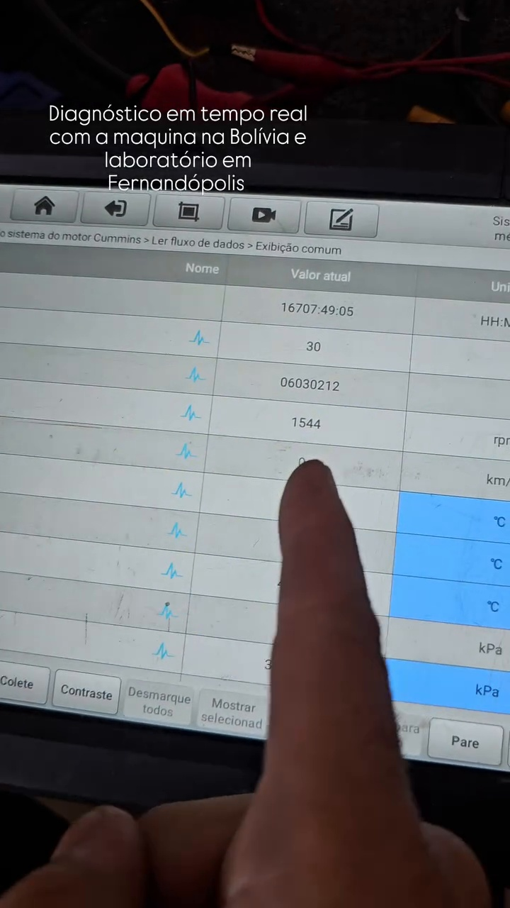
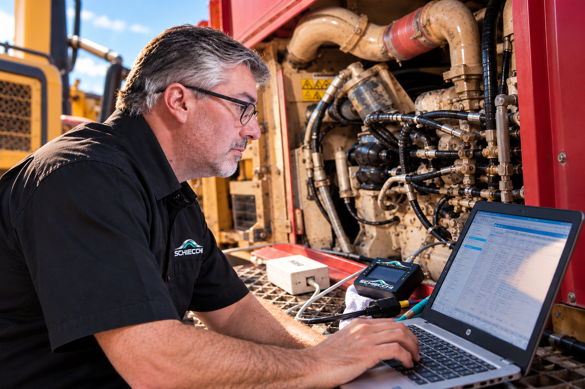

SCHIECCHI GATEWAY
DIAGNÓSTICO
SEM FRONTEIRAS.
Conecte sua máquina aos recursos de diagnóstico da SCHIECCHI, onde quer que ela esteja.
FALE COM A SCHIECCHI
COMO FUNCIONA
DA MÁQUINA
AO DIAGNÓSTICO.
O SCHIECCHI GATEWAY conecta os sistemas eletrônicos da máquina aos recursos de diagnóstico da SCHIECCHI através da internet.
- MÁQUINAEquipamento no cliente.
- SCHIECCHI GATEWAYPonte de comunicação.
- INTERNETConexão remota segura.
- SCANNERS E SOFTWARESRecursos de diagnóstico.

- ANÁLISE TÉCNICAEspecialistas SCHIECCHI.

- 01CONECTAO GATEWAY é conectado à máquina.
- 02TRANSMITEA conexão é estabelecida pela internet.
- 03ACESSANa SCHIECCHI, utilizamos os recursos de diagnóstico compatíveis com o equipamento.
- 04ANALISAAcessamos os sistemas eletrônicos disponíveis.
- 05RESULTADOSParâmetros, falhas e procedimentos de diagnóstico conforme o sistema e a ferramenta.
O GATEWAY NÃO SUBSTITUI
O SCANNER.
ELE LEVA A CONEXÃO
DA MÁQUINA ATÉ O SCANNER.
Quando necessário:
Pessoa no local para chave, acionamentos e verificações físicas.
RECURSOS DE DIAGNÓSTICO
MUITO ALÉM
DE LER FALHAS.
Acesso aos recursos disponíveis para cada máquina, conforme o sistema e a ferramenta de diagnóstico.
DE FALHAS
DE PARÂMETROS
DE SISTEMAS
DE DIAGNÓSTICO
DISPONÍVEIS
REMOTA
As funções disponíveis variam conforme equipamento, módulo eletrônico, sistema e ferramenta de diagnóstico utilizada.
COMPATIBILIDADE
COMPATIBILIDADE
TÉCNICA SOB CONSULTA.
Cada máquina possui características próprias de comunicação e diagnóstico. A aplicação do SCHIECCHI GATEWAY é avaliada conforme o equipamento, sistema eletrônico, protocolo e recursos disponíveis.
CONSULTAR MEU EQUIPAMENTOCASO REAL | BOLÍVIA
TECNOLOGIA
VALIDADA EM CAMPO.
Uma das primeiras versões funcionais do SCHIECCHI GATEWAY foi aplicada durante uma operação real em uma Terex HC250 da Nutrioil, na Bolívia.
A experiência em campo fez parte da evolução da tecnologia até o produto atual.
CONHECER O CASO REAL
SUA MÁQUINA ESTÁ LONGE.
O DIAGNÓSTICO NÃO PRECISA ESTAR.
FALE COM A SCHIECCHI TECNOLOGIA QUE TRABALHA COM VOCÊ.